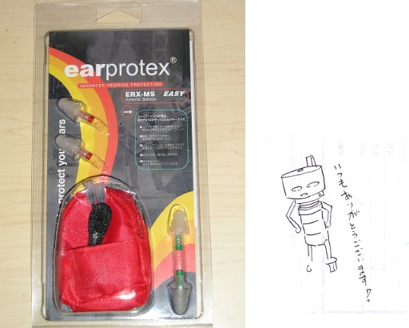
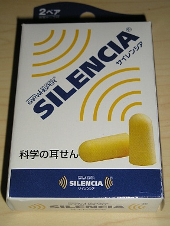
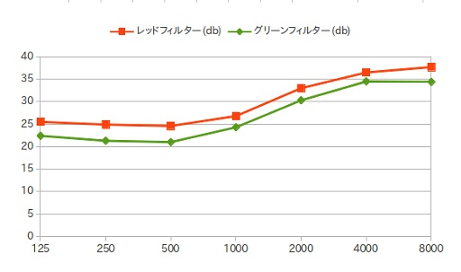

2012 年
04 月 11 日 ( 水 )
念！！願！！
耳栓を購入しました。しかもハイテクです。しかもシライミュージックさんのクラちゃん営業部長のごあいさつ入りです。プレミアです！！

さて、これまでサイレンシアという耳栓を使っていました。ですが自分が使うにはいくつか欠点がありました。

ひとつはサイレンシアが遮音を目的としていることです。私の求めてるのは遮音ではなく減音です。
もうひとつは、サイレンシアは一度ギュッと押しちぢめて耳孔に突っ込んで、耳孔内で膨らむことで耳孔を塞いで遮音する仕組みになっているのですが、膨らむ時間が速すぎるのですね。耳孔に充分に突っ込む前に耳孔に入らなくなるほど膨らんでしまう。なのでこの点でも自分は困っていたわけです。
シライミュージックさんの blog で VATER Ear Plugs を知って「これほしい！！」となっていたのですが。シライミュージックさんでもすでに売り切れ。メーカーサイトに行ってもそんな商品があるという気配すらなかったのでおそらく廃番。代理店らしきものもまったく見当たらない。
正直がっくり来ていたのですが、突然シライミュージックさんから VATER Ear Plugs と同機能の WestStar earprotex ERX-MS というのがでたよ！！との報が！！
目先の現金がなかったので、今になってやっと購！！入！！
説明書にあった周波数毎の減音性能のうち平均値をグラフにしてみました。横軸が等幅でないことに気をつけてください。

高音がより減音される傾向がみてとれますね。内耳の神経束は高周波数の音によりやせ細りやすいといいますから、日常会話には困らないようにすることと耳への優しさを、うまく両立してるんですね。
私はときおり音が苦痛になることがある疾患に悩まされてもいるので ※1 今は日常生活で試用中です。スタジオで試す機会があるのかどうかはちょっと現時点で不明です。ポプラちゃんの話もポシャっちゃいましたし。
※1 日常的な音量でもきついんです。常時ではないんですけどね。なお内耳系の疾患ではありません。でもわたしと同疾患の人は同じ悩みがあるはず。
ついでにサイレンシアの遮音効果もプロットしてみたところ、おもしろい結果がでたので公開します ※2 ※3。

高い周波数から低い周波数に向けて見ていきます。
イヤープロテクスのグラフは 2000Hz あたりを境に低音域はグンと遮音能力が下がっています。つまりイヤープロテクスは概ね 1000Hz 以下はそこそこ音を通す設計になっています。
ところがサイレンシアは 4000Hz から 2000Hz かけて遮音性能を低下させるとみせかけて、500Hz まではかなり高い遮音性能を維持してます。
500Hz より小さな周波数の遮音性能も高レベルで維持されており、実質的に 2000Hz 以下の周波数は 2000Hz での遮音性能を維持するようになっています。
サイレンシアはイヤープロテクスと比較して全体的に遮音性が高いだけでなく、2000Hz 以下の周波数でも高い遮音性を維持し、低い周波数から高い周波数にかけての高い遮音性を持つように作られています。つまりサイレンシアは文字通り静かな環境が欲しい時につかう耳栓だといえます。
今述べたように、サイレンシアは高周波数音を相対的に遮音しながらも、全周波数にわたって大きく遮音しています。そのため結果的に音にクリアさが失われてしまうんですね。つまりイヤープロテクスと比較してあまり音楽の現場向きではないと言えます。
なので音楽の現場に持っていくならイヤープロテクスがよいということになります。
人様のライブを観に行くときもイヤープロテクスはいいんじゃないでしょうか。'90 年代くらいから鼓膜がディストーションを起こすくらいの大音量で PA をならす大音量コンテスt …いや、ライブが定着してますし。
その Rock 系の大音量コンテスt …げふんげふん、ライブについてのネタは、また後日に書こうかと思います。
※2 イヤープロテクスのデータにもサイレンシアのデータにも標準偏差値のデータがあわせて記載されています。サンプリングしてデータをとったときに、同じ製品であってもこれくらいの標準偏差は生じるというものなんでしょうね。
- ※3 グラフ・データ・ダウンロード